courier-driver-portfolio-stats FAIL 0
apps libreoffice_calc + libreoffice_writer + os
I drive for Northgate Courier and I'm applying for a dispatch role. My delivery log for last quarter is in my documents folder. Turn it into hard numbers I can quote — total stops, on-time rate, and average stops per shift — and put those figures into a one-page driver profile letter I can send, saved as PDF next to the log.
task config + evaluator
{
"config": [
{
"type": "execute",
"parameters": {
"command": "mkdir -p '/home/user/documents' && rm -f '/tmp/__fixture.b64' && printf %s 'UEsDBBQACAgIADaHHl0AAAAAAAAAAAAAAAALAAAAX3JlbHMvLnJlbHOtks9qwzAMh+99CqN747SFMUacXsqgtzK6B9BsJTGJ/2BrW/b2M2OwdZSwwY6Wf/r0IdTsZzeJF0rZBq9gU9UgyOtgrO8VPJ7v17ewb1fNA03IJZIHG7MoPT4rGJjjnZRZD+QwVyGSLz9dSA65PFMvI+oRe5Lbur6R6TsD2gumOBoF6Wg2IM5vkX7DDl1nNR2Cfnbk+cqIH4lCxtQTK5gn+RrS+BTCWBUoyOsu27+6mAUXR4wGGaUOidYxFUhiS/nLqnSfSjl/JJa8dv+5I5qZvCGzrIQxfhqtGnlxC+07UEsHCGu/dgTfAAAAQgIAAFBLAwQUAAgICAA2hx5dAAAAAAAAAAAAAAAADwAAAHhsL3dvcmtib29rLnhtbI1T23KbMBB971cwere5OKGOxzjj4jDJTG8Tp8ljRsBiVAuJSutbO/33LsKk6bQPfQC0F509u3uYXx8b6e3BWKFVwsJxwDxQhS6F2iTsy0M2mjLPIlcll1pBwk5g2fXizfygzTbXeuvRfWUTViO2M9+3RQ0Nt2PdgqJIpU3DkUyz8W1rgJe2BsBG+lEQxH7DhWI9wsz8D4auKlHAShe7BhT2IAYkR2Jva9FatphXQsJj35DH2/Yjb4h2ymXB/MUL7c/Gy3mx3bUZZSes4tICNVrrw6f8KxRIHXEpmVdyhFQ3LVXIhRR4GnL/wNJIV6geOTvHo4CD/R3vTAd9q434rhVyuS6MljJhaHbnssQYRfGvyLqb2APP7eA8PglV6kPCaFenV+eDOz6JEmvaZDyZXgy+WxCbGhM2Da8i5iHP77uJJSwO6FoljEVXxKFw6mQPVK+zqCH/VUduecPXU26yJUjKN6dnqTfP36KOMwXvSqLglIOUsxdW5JKom5mggLkrIwc94FHfBW1EIBg3750iLmFHzkD1QZcEsSS0c/xlXWd7BRI5sR0HQdjBwhHfW3Tfs7akpvNf+pIiN9AryomLeTsjEvbjbRzF6TSORtEynIzC8OZy9G5ycTnKbrKMJpiu0qvsJwnNoc7oSXv6Fg39NfdQrU+042MvuqWj5FNW/3bM/EEai19QSwcI994ExAUCAACAAwAAUEsDBBQACAgIADaHHl0AAAAAAAAAAAAAAAANAAAAeGwvc3R5bGVzLnhtbO1YXU/bMBR936+w/A5JS1tgSoIYqNNeJrSWadLYg0mcxMMfke1Cw6/HjpM0gQJS97AipS/2vb7n3JOba9VOcLZmFNxjqYjgIRwd+hBgHouE8CyE18v5wQkESiOeICo4DmGJFTyLPgVKlxQvcow1MAxchTDXuvjseSrOMUPqUBSYm5VUSIa0MWXmqUJilCgLYtQb+/7MY4hwGAV8xeZMKxCLFdchHLcu4IZvidE2m0Dg6C5EYqR8xRxLRKG3NXjaDy7N7+aAsZuDJLEIr04ZBangm8wT6BxRoB7BPaKGya8SIIadfYn/op8rsEBc2YUUMUJLtzSuiB38bZJzSZzwLtzfG3g12NIQSnsvxTqioEBaY8nnxgD1fFkWpsjctIijqeLeic4kKkfjaQdQDSbvrZCJackm8wg2LpAQlAmO6HURwhRRhWHruhQPvHFGAcWpNsSSZLkdtSg8S6K1YGbSYGxqx9xOTPoYU7qw/f0r3Ty9b0jX6ct+5JVhto3VXk8dU22goqDlXFgSLVe4dnypQnquc0oyzvCzwCspNI51tT0rdxSgJhDkQpJHQ21fYFZvB7ubNYmtyz0vBBqv9Q+hkWMxmh4kKpbG2RaR8KRKbNZULgm/W4o5aZdNmYpWBqAivsNJIzIniYF2Ir11+qxS/qZOo13rVOt8Xqiuu1uppg0+jpjxIOYVMTvvrUHMIGYQM4gZxOwiZnK0T/+Uk9FeqZnslZrxPqk5/c9ivO7x3R3mu+f4XY/x6/Sl8q6ef5T+0c709QV7KNu7ZfPqDuzcK9tunMGOF9gbegi/268WtFO52xWhmnBneS8BF4Ix1MSPpj3A0asA8Nv/04JmPdBsK2glJeZx2WKOe5jJW5herpMe7ngb7grL2LyDFnLag7gvBptiGmPzNSp6AlBLBwhVDmOEqQIAANISAABQSwMEFAAICAgANoceXQAAAAAAAAAAAAAAABgAAAB4bC93b3Jrc2hlZXRzL3NoZWV0MS54bWy9Wt9zozYQfu9fwfDQp9ZGMhj76rhz/pXrzLW5aa7tTN+IkWMaQBTk5HJ/fSWBf+0utTuTkofYiM+7q0/Ssp/Q5McvWeo8i7JKZH7jsp7nOiJfyzjJH2/c3z6vvh+5TqWiPI5SmYsb91VU7o/TbyYvsnyqtkIoRxvIqxt3q1Txrt+v1luRRVVPFiLXdzayzCKlL8vHflWUIortj7K0zz1v2M+iJHdrC+/Ka2zIzSZZi4Vc7zKRq9pIKdJI6fCrbVJUe2tf4qvsxWX0oru6j+ckxEV952CP+chelqxLWcmN6q1l1oSGeznuj8/6ma2vCSyLyqdd8b02XOjOPSRpol5tjO50Yo1/Kp1NkipR/ixjPS6bKK2EvldEj+JeqN8Ke199lp90w/52fzrpNz+eTuJEU2iG3SnF5sZ9z97d8sBALOL3RLxUJ9+daitfVjrAXRpVe3u28bZM4o9JLnSrKndN46/yZS7TD5oJPbVOb/wpNGX7hjJ53OoQP4qNOphU0cO9SMVaifj0d3c7lWon96/Zg0wPBmKxiXapMiFod7Lctz/riG/c3PCZapOyMC7mIk1NP11nbbA/aftD33W+Spndr6NUs8Q87+T6F/tz2Gr4/Bi9yp2lRZvQN81ieJDyybQYs54ZJNsJQ28RmYXTBOE6kW59Fsdgjtf1T53q72ZAjuNlDJ9+34/Mys4YPdQNEZqEP5JYbU3QPW/EvQHTY7q/qwflgzCU69u8pxf2Vz0Y+5aGflnz/FE8i1TjbUCnbdpD3b/+WQDTiea0sv8Nu2lUVGb8GqPrXaVk1kRWj9A2iWORk26tzyz6oqPUn0luPyv1akbIkF2bGfdYaAh6W4+88cgJj4z1uP/2LgeNywHlUg8Tf3uXfuPSp1z6vdHo7V0GjcuA7uX4fyB22LgcEi6DXhi8vcew8RgSHsOeN7YLul4o9TMmUtF0UsoXp7STvPZbr6mDq+NyBTHU6H9Zv9Y96p3utHFnUk9lEfrHlW59nnqT/rMJsEHMMIKdI+YYwc8RC4wYnCOWGOGfI1YYEZwjbjFieED0Nb8HknnHJHMbGLOB5XXngsEIdHDGUfghIPoUUdsZACMLAgIGY0lAwIiuMGQ8AmTjaEc02YOOyR6QZAMqZwMU/hiQPUAccABZXIYsL0NWGMLYELCNw2UeTbffMd0+RfcYTKiZj+OHWcRHNPgAsrgMWWLIAPKNIYyDNXJLxMtpvoOO+Q5IvmEuCXD8IOPOA8wUWCSLy5AlAQGOVhgSwsxNhOvTdA87pntI0g2S4WyI4wddnA8vErW4DFlehqwwhHkAc4vjbUneYcd0hwTdvgezSYjpBglzHuJUAUZkQUDgo/IyZIUhIXxUEuG2JO9Rx3SPSLoBUbMRjh9WJiM8L2HyvgxZYggHjlYYwjyYvIl4W5L3uGO+xyTfMJuMLxaCY8wlMLK4DFkSEFh0Y8gQ5hIcbVvuZl7X4saj+IZPwlkD+7di8AzScAVSzoLCgKW0pDCw+CYwAZI6OOSWDM46V5SMJH0ISSd0JRKW7GL+XRAYWPEtr8CsCEwIq3Aq5pZMzrrWmIwSmT5Hah7rNlQZMiz/OEwvV2CWFAapeowZoslOxNyS0FnXapNRctPnKMUQAg5WiAwLQThLFxQGluQUBtGOMUM024mY2zJ716qTUbLTh9XCjBE6DlaKjFCVcFflCsySwniQdoyBOxO3RMxtqb1r7cko8ekPUI4h5BysYBghHGGBTmEQ65cxKwKDFT8VdFtu71qEMkqF+rCfM4ZlHaKdEJAepB1j0LYWhYGlOoEZepB1Qjm3pfautSgjxShMtzOG5R2qHgkdiVi/jFkSGFiFrggMrh4JRdqW2buWpIzUpD4qHwmRh8pHQnLCLS4KM4S0Exi460Jg8C4uEXRbau9amTJSmvpjSDuh9lD5SOhKVLVjDM4xBAblGIxhHnqiEkG3pHbetUTlpEQNYP3Isd5D9eMZpjEFtxgpDMwyBAZuHawIzAjOdirmltzOuxapnBSpAcwynBB8sH7khLiEWwMUBm4NUBhYyRCYcAxpJ2JuSe688xehpEiFVcGME4IPvQslxCVUS1dglhQmgLRjDJ7tV78Q5V1rVE5qVLiRN+NY7yHSsWxEL+kIDNp5pDCwkCEwDG5N3xIxt6b2rjUqJzXqENaPHOs9WD9y4q0m3JChMLCQoTDwfQaBCeADlQi5NbN3rVE5qVFDlGIIuQfrR35ZWy6uwCwpDNwZIDAMvve6pYKGqb1/cqaoKJNc3RX2WKyzFZE5z1sdOH08HtmELfdCHY48yTL5KnMVpXORK1GeHJB6FqVK1vhGvz6A+nNUPibacWoPdnq9cBQGzWnP46WShT1wHPDw8KfnxINUehJQd7b2NOnRwEZKdXLdPxx+3RVOERWivE++Cvumpzo53mkPxe4PSTaXh1ORrmNM3JXWTyxf8s9bkd/p3up5WCa6s/ag8Y1byFKVUaJ0uGm0fnqfx39sE3U4Z+vEZXRypHUt0nQuM3NiuTKnUnNh/JaVMmdJf9llD8ab9r2rxAo2w6FYFMmNOzAd2Y/BsWUti0TYFaC5qNlaWY6cONls9Djlyto/hrlvvovj5fNxJU4nMo7rw7vTb6Os+GFu/3/7906qHxbir+j3nXMvymTz3UzKp7rZIhi3H+8n/aMBY6sO47/aMjw49vsna7CxMumf9k1fHs6iT/8BUEsHCOHtEg/qBwAAzy4AAFBLAwQUAAgICAA2hx5dAAAAAAAAAAAAAAAAGgAAAHhsL19yZWxzL3dvcmtib29rLnhtbC5yZWxzrZFNa8MwDIbv/RVG98VJB2OMOL2MQa/9+AHGUeLQxDaS1rX/fi4bWwpl7NCT0Nfzvkj16jSN6ojEQwwGqqIEhcHFdgi9gf3u7eEZVs2i3uBoJY+wHxKrvBPYgBdJL1qz8zhZLmLCkDtdpMlKTqnXybqD7VEvy/JJ05wBzRVTrVsDtG4rULtzwv+wY9cNDl+je58wyA0JzXIekTPRUo9i4CsvMgf0bfnlPeU/Ih3YI8qvg59SNncJ1V9mHu96C28J261Qfuz8JPPyt5lFra/e3XwCUEsHCE/w+XrSAAAAJQIAAFBLAwQUAAgICAA2hx5dAAAAAAAAAAAAAAAAFAAAAHhsL3NoYXJlZFN0cmluZ3MueG1slZPLTsMwEEX3fIXlfeu0UFRVSSpUUbHhVR7byI2njcXYDp5JRf6eEBbskLu0fc4de6zJ118OxQki2eALOZtmUoCvg7H+WMi31+1kKQWx9kZj8FDIHkiuy4uciMWgeipkw9yulKK6AadpGlrww8khRKd5WMajojaCNtQAsEM1z7Jr5bT1UtSh81zIxUKKztvPDja/G7OlLHOyZT4WWVGr66H2kEIQTyBLauyBK6MZcsVlrn7Qf/AYukSSOLRUtai9B3OGUQfXInCiE3zF1kE1ukmGswhp5AkaW2Paa3d2/HmTRr/fPEyyWRJ6q4n32n+k586T0HuLeLCAaW0egy+T0LuAaEk86XjGna+S0I2ODFHsrDmm9fkRjXjudIx9Ev4CuO/FFodh++PVMJ/lN1BLBwhZlVUOLQEAAN0DAABQSwMEFAAICAgANoceXQAAAAAAAAAAAAAAABEAAABkb2NQcm9wcy9jb3JlLnhtbG2RzU7DMBCE7zxF5HviBCSEoiSVOHCiElKpxNXY29TFf7K3Tfv2OAk1ReS2M/t5bO82q7NW2Ql8kNa0pCpKkoHhVkjTt2T7/pI/kSwgM4Ipa6AlFwhk1d013NXcenjz1oFHCSGLQSbU3LVkj+hqSgPfg2ahiISJzZ31mmGUvqeO8S/WA70vy0eqAZlgyOgYmLuUSH4iBU+R7ujVFCA4BQUaDAZaFRX9ZRG8DosHps4NqSVeHCyi12aiz0EmcBiGYniY0Pj+in6sXzfTV3NpxlFxIF0jeM09MLS+a+itiLWAwL10GEc+N/8YUStm+mOcTwcm324mJFnj5BULuI472kkQz5eYseBFy8NJjnvtyolIcrwiHD8PwHG+P4lYo0QFs30t/+26+wZQSwcILcuMlCcBAAA3AgAAUEsDBBQACAgIADaHHl0AAAAAAAAAAAAAAAAQAAAAZG9jUHJvcHMvYXBwLnhtbJ2QTW/CMAyG7/sVVcS1TSgbIJQGbZp2QtoOHdqtyhIXMuVLSYrKv18ADTjPJ/u19dh+6Xo0ujhAiMrZBk0rggqwwklldw36bN/KJSpi4lZy7Sw06AgRrdkD/QjOQ0gKYpEJNjZon5JfYRzFHgyPVW7b3OldMDzlMuyw63sl4NWJwYBNuCZkjmFMYCXI0l+B6EJcHdJ/odKJ031x2x595jHagvGaJ2AU39LWJa5bZYCRLF8L+uy9VoKn7AjbqO8A7+cVeFHNqkVVTzbKDmP3tZx388fibqDLL/yASHhGJi+D0rKsKb6Hncjbi9Vs+lSRHOeBP43im6vsF1BLBwgZ5zXq+QAAAJoBAABQSwMEFAAICAgANoceXQAAAAAAAAAAAAAAABMAAABbQ29udGVudF9UeXBlc10ueG1svVQ7T8MwEN77KyKvKHbLgBBK2oHHCJUoMzLxJTGNH7Ld0v57zilUVQkpiIjJsu++l092NtuoJlmD89LonEzomCSgCyOkrnLytLhLL8lsOsoWWws+wV7tc1KHYK8Y80UNintqLGislMYpHnDrKmZ5seQVsPPx+IIVRgfQIQ2Rg0yzGyj5qgnJ7QaPd7oIJ8n1ri9K5YRb28iCByyzWGWdOAeN7wGutThyl344o4hse3wtrT/7XsHq6khAqpgsnncjXi10Q9oCYh7wup0UkMy5C/dcYQN7jkkYHThPl9KmYW/GLV+MWdL+a+9QM2UpCxCmWCmEUG8dcOFrgKAa2q5UcalP6PuwbcAPrd6S/iB5C/CsXSYDm9jzn/CxG/fhHP5p9L7mDsRjcPi+B5/AIXefD8TPnbEefwYHvzfxmTuiU4tE4ILsH/1eEan/nBriWxcgvmqPMtZ+lNN3UEsHCI/25TZZAQAAVwUAAFBLAQIUABQACAgIADaHHl1rv3YE3wAAAEICAAALAAAAAAAAAAAAAAAAAAAAAABfcmVscy8ucmVsc1BLAQIUABQACAgIADaHHl333gTEBQIAAIADAAAPAAAAAAAAAAAAAAAAABgBAAB4bC93b3JrYm9vay54bWxQSwECFAAUAAgICAA2hx5dVQ5jhKkCAADSEgAADQAAAAAAAAAAAAAAAABaAwAAeGwvc3R5bGVzLnhtbFBLAQIUABQACAgIADaHHl3h7RIP6gcAAM8uAAAYAAAAAAAAAAAAAAAAAD4GAAB4bC93b3Jrc2hlZXRzL3NoZWV0MS54bWxQSwECFAAUAAgICAA2hx5dT/D5etIAAAAlAgAAGgAAAAAAAAAAAAAAAABuDgAAeGwvX3JlbHMvd29ya2Jvb2sueG1sLnJlbHNQSwECFAAUAAgICAA2hx5dWZVVDi0BAADdAwAAFAAAAAAAAAAAAAAAAACIDwAAeGwvc2hhcmVkU3RyaW5ncy54bWxQSwECFAAUAAgICAA2hx5dLcuMlCcBAAA3AgAAEQAAAAAAAAAAAAAAAAD3EAAAZG9jUHJvcHMvY29yZS54bWxQSwECFAAUAAgICAA2hx5dGec16vkAAACaAQAAEAAAAAAAAAAAAAAAAABdEgAAZG9jUHJvcHMvYXBwLnhtbFBLAQIUABQACAgIADaHHl2P9uU2WQEAAFcFAAATAAAAAAAAAAAAAAAAAJQTAABbQ29udGVudF9UeXBlc10ueG1sUEsFBgAAAAAJAAkAPwIAAC4VAAAAAA==' >> '/tmp/__fixture.b64' && base64 -d '/tmp/__fixture.b64' > '/home/user/documents/delivery_log_q2.xlsx'",
"shell": true
}
}
],
"evaluator": {
"func": "check_include_exclude",
"result": {
"type": "vm_command_line",
"command": "echo ostg-v16",
"shell": true
},
"expected": {
"type": "rule",
"rules": {
"include": [
"__judge_decides__"
]
}
}
}
}
step 1 21:01:26
THINKINGI need to first find the delivery log in the documents folder. Let me take a screenshot to see the current state, then open the file manager to locate the log. Actually, I can start by opening the Files application to navigate to the documents folder.
ACTIONI'll start by opening the file manager to locate your delivery log in the documents folder.
TOOL CALL<tool_call>
<function=computer_use>
<parameter=action>
left_click
</parameter>
<parameter=coordinate>
[17, 560]
</parameter>
</function>
</tool_call>
EXECUTED (pyautogui in VM)pyautogui.click(32, 605)
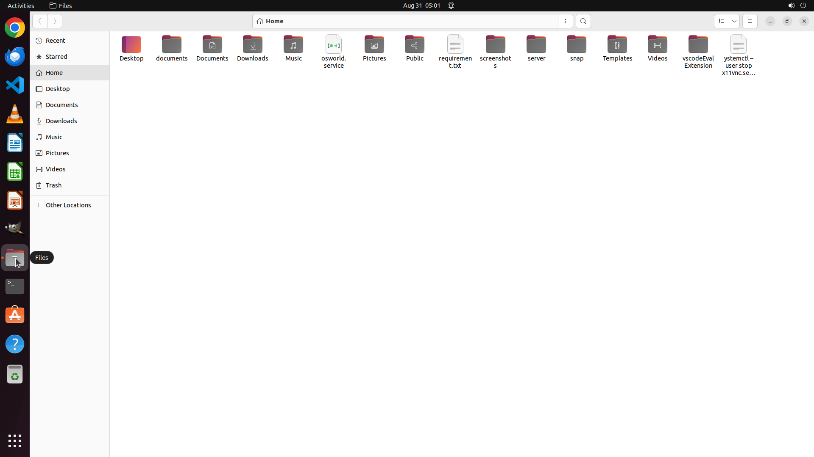
step 2 21:01:34
THINKINGThere's both "documents" and "Documents". The user said "documents folder". Let me check "Documents" (capital, standard) first, then "documents" if empty. Let me click on Documents in the sidebar.
ACTIONI see the home folder. There are both "documents" and "Documents" folders. Let me check the Documents folder first.
TOOL CALL<tool_call>
<function=computer_use>
<parameter=action>
left_click
</parameter>
<parameter=coordinate>
[74, 227]
</parameter>
</function>
</tool_call>
EXECUTED (pyautogui in VM)pyautogui.click(142, 245)
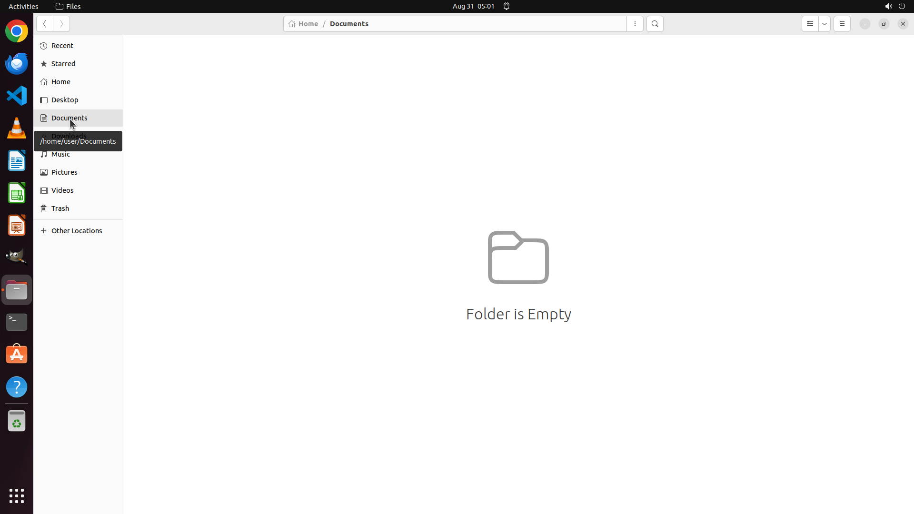
step 3 21:01:41
THINKINGDocuments folder is empty. The log must be in the lowercase "documents" folder. Let me navigate there by going back to Home and opening "documents".
ACTIONDocuments is empty. The log must be in the lowercase "documents" folder. Let me navigate there.
TOOL CALL<tool_call>
<function=computer_use>
<parameter=action>
left_click
</parameter>
<parameter=coordinate>
[335, 45]
</parameter>
</function>
</tool_call>
EXECUTED (pyautogui in VM)pyautogui.click(643, 48)
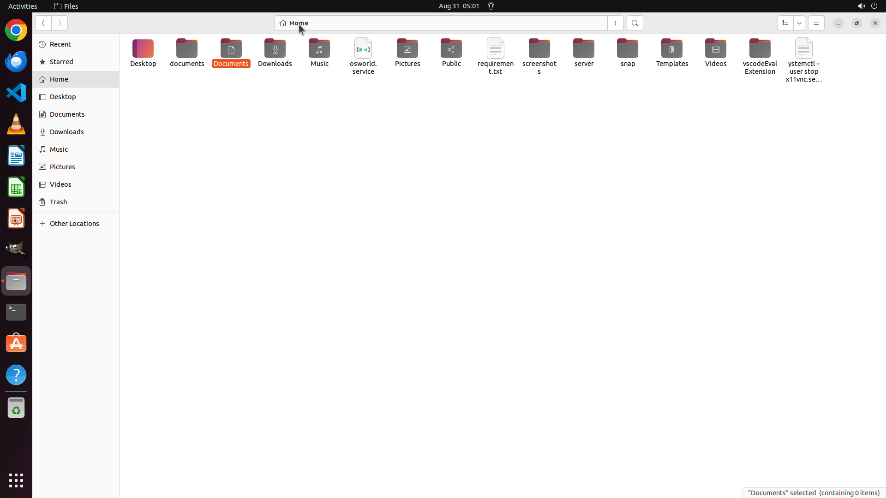
step 4 21:01:48
THINKINGNow I'm back in Home. Let me double-click on the lowercase "documents" folder to open it.
ACTIONNow let me open the lowercase "documents" folder.
TOOL CALL<tool_call>
<function=computer_use>
<parameter=action>
double_click
</parameter>
<parameter=coordinate>
[210, 93]
</parameter>
</function>
</tool_call>
EXECUTED (pyautogui in VM)pyautogui.doubleClick(403, 100)
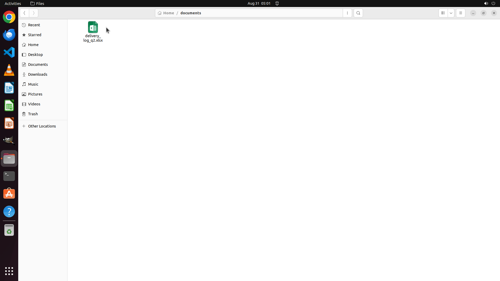
step 5 21:02:13
THINKINGFound the file: delivery_log_q2.xlsx. It's an Excel file. I need to open it to read the data. Let me open it with LibreOffice Calc by double-clicking.
ACTIONFound `delivery_log_q2.xlsx`. Let me open it to examine the data.
TOOL CALL<tool_call>
<function=computer_use>
<parameter=action>
double_click
</parameter>
<parameter=coordinate>
[186, 97]
</parameter>
</function>
</tool_call>
EXECUTED (pyautogui in VM)pyautogui.doubleClick(357, 104)
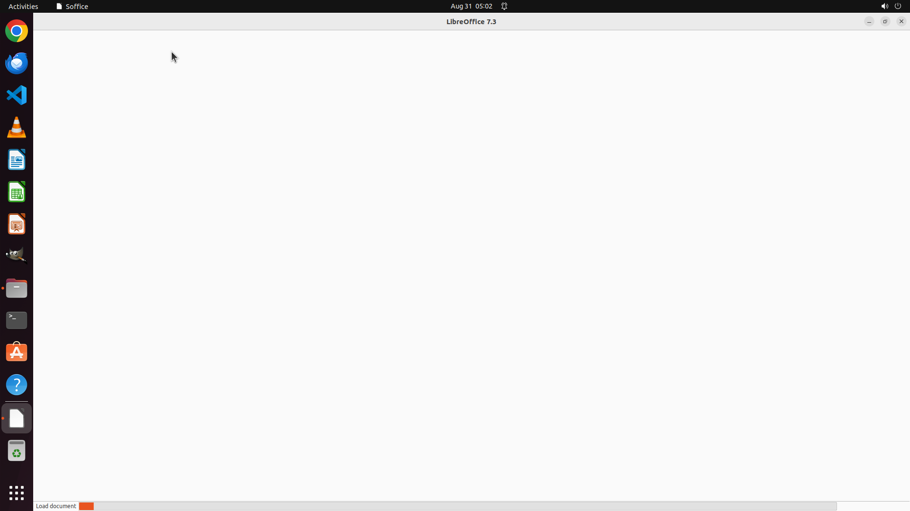
step 6 21:02:39
THINKINGLibreOffice is loading the document. I need to wait for it to finish loading.
ACTIONLibreOffice is loading. Let me wait for it to open.
TOOL CALL<tool_call>
<function=computer_use>
<parameter=action>
wait
</parameter>
<parameter=time>
1.0
</parameter>
</function>
</tool_call>
EXECUTED (pyautogui in VM)WAIT
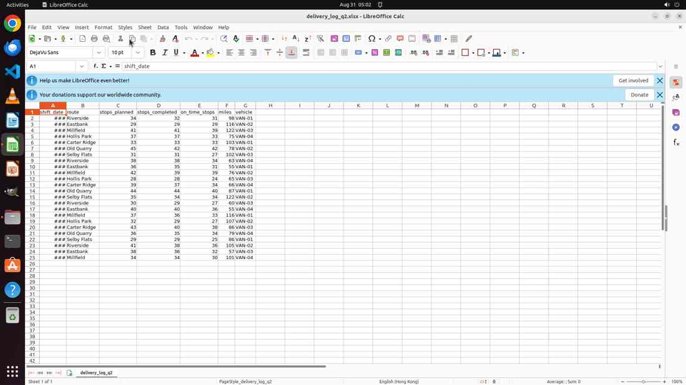
step 7 21:03:06
THINKINGThe spreadsheet is open. I can see the columns:
- A: shift_date (showing ###, need to widen)
- B: route
- C: stops_planned
- D: stops_completed
- E: on_time_stops
- F: miles
- G: vehicle
Data rows: row 1 is header, rows 2-25 are data = 24 shifts/rows.
I need:
1. Total stops = sum of stops_completed (D2:D25)
2. On-time rate = sum(on_time_stops) / sum(stops_completed)
3. Average stops per shift = total stops / number of shifts (24)
Rather than read manually, let me use formulas to be precise. But the column A shows ### so I can't read dates, which doesn't matter for the calc. Let me use a cell to compute the values. Actually, I could just compute manually, but formulas are safer.
Let me put formulas in empty cells. I'll use H1 for total stops, H2 for on-time rate, H3 for average. Actually let me use column I to not overwrite. Let me click H2.
Let me type formulas:
- I2 = sum(D2:D25) total stops
- I3 = sum(E2:E25)/sum(D2:D25) on-time rate
- I4 = sum(D2:D25)/count(D2:D25) average stops per shift
- I5 = count(D2:D25) number of shifts
Let me click the Name Box and go to I2.
ACTIONThe spreadsheet is open. I can see the columns: shift_date, route, stops_planned, stops_completed, on_time_stops, miles, vehicle, with 24 data rows (rows 2–25). Let me compute the figures using formulas. I'll enter them in column I.
TOOL CALL<tool_call>
<function=computer_use>
<parameter=action>
left_click
</parameter>
<parameter=coordinate>
[78, 170]
</parameter>
</function>
</tool_call>
EXECUTED (pyautogui in VM)pyautogui.click(149, 183)
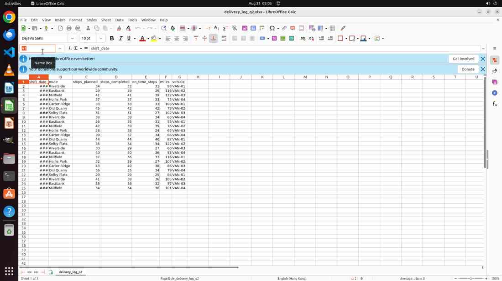
step 8 21:03:41
THINKINGThe Name Box is selected (shows A1). I'll type I2 to navigate there, then enter formulas. Let me type the navigation and formulas. I'll enter each formula with Enter to move down.
ACTIONNow I'll navigate to cell I2 and enter the calculation formulas.
TOOL CALL<tool_call>
<function=computer_use>
<parameter=action>
type
</parameter>
<parameter=text>
I2
</parameter>
</function>
</tool_call>
EXECUTED (pyautogui in VM)pyautogui.typewrite("I2")
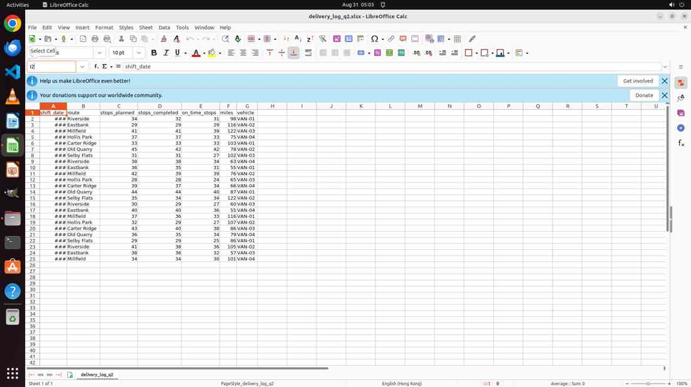
step 9 21:03:54
THINKINGThe Name Box shows "I2" and I've pressed enter. The cell should now be I2 selected. Now let me type the formulas. I'll type each formula followed by Enter to move down to the next row.
I2: =SUM(D2:D25) total stops
I3: =SUM(E2:E25)/SUM(D2:D25) on-time rate
I4: =SUM(D2:D25)/COUNT(D2:D25) average stops per shift
I5: =COUNT(D2:D25) number of shifts
ACTIONNow I'll enter the calculation formulas in cells I2 through I5.
TOOL CALL<tool_call>
<function=computer_use>
<parameter=action>
type
</parameter>
<parameter=text>
=SUM(D2:D25)
=SUM(E2:E25)/SUM(D2:D25)
=SUM(D2:D25)/COUNT(D2:D25)
=COUNT(D2:D25)
</parameter>
</function>
</tool_call>
EXECUTED (pyautogui in VM)pyautogui.typewrite("=SUM(D2:D25)\n=SUM(E2:E25)/SUM(D2:D25)\n=SUM(D2:D25)/COUNT(D2:D25)\n=COUNT(D2:D25)")
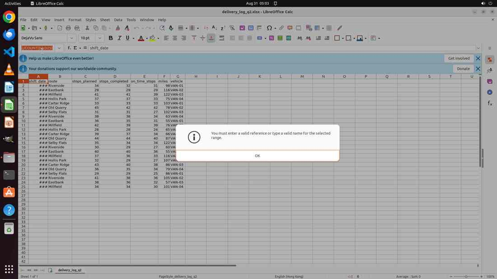
step 10 21:04:30
THINKINGAn error dialog appeared: "You must enter a valid reference or type a valid name for the selected range." The Name Box shows ")/COUNT(D2:D25)". This means my text got typed into the Name Box instead of the cell. When I pressed Enter after "I2", it seems the focus went somewhere and the subsequent typing went to the Name Box.
Actually what happened: after navigating to I2, the cell wasn't in edit mode for typing. The first Enter in the previous step moved focus. Then my formulas started being interpreted. The Name Box now contains a partial formula. Let me click OK to dismiss, then clear the name box and retry properly.
ACTIONAn error appeared — my formulas went into the Name Box instead of the cell. Let me click OK and start over.
TOOL CALL<tool_call>
<function=computer_use>
<parameter=action>
left_click
</parameter>
<parameter=coordinate>
[517, 556]
</parameter>
</function>
</tool_call>
EXECUTED (pyautogui in VM)pyautogui.click(993, 601)
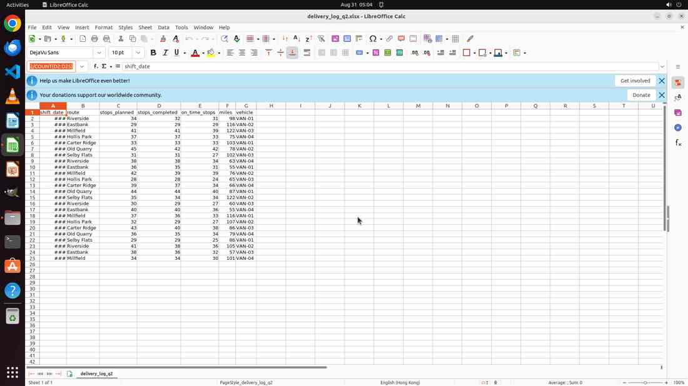
step 11 21:05:00
THINKINGThe Name Box still shows the invalid text "/COUNT(D2:D25)". I clicked on the spreadsheet area so focus is on the grid now. Rather than using formulas which are causing focus issues, I can compute the values manually by reading the data, which is more reliable here. The data has 24 rows.
Let me read the values from the screenshot:
stops_completed (column D), on_time_stops (column E):
Row2: D=32, E=31
Row3: D=29, E=29
Row4: D=41, E=39
Row5: D=37, E=33
Row6: D=33, E=33
Row7: D=42, E=42
Row8: D=31, E=27
Row9: D=38, E=34
Row10: D=35, E=31
Row11: D=39, E=39
Row12: D=28, E=24
Row13: D=37, E=34
Row14: D=44, E=40
Row15: D=34, E=34
Row16: D=29, E=27
Row17: D=40, E=36
Row18: D=36, E=33
Row19: D=29, E=27
Row20: D=40, E=38
Row21: D=35, E=34
Row22: D=29, E=25
Row23: D=38, E=36
Row24: D=36, E=32
Row25: D=34, E=30
Let me sum D (stops_completed):
32+29=61
61+41=102
102+37=139
139+33=172
172+42=214
214+31=245
245+38=283
283+35=318
318+39=357
357+28=385
385+37=422
422+44=466
466+34=500
500+29=529
529+40=569
569+36=605
605+29=634
634+40=674
674+35=709
709+29=738
738+38=776
776+36=812
812+34=846
Total stops_completed = 846
Now sum E (on_time_stops):
31+29=60
60+39=99
99+33=132
132+33=165
165+42=207
207+27=234
234+34=268
268+31=299
299+39=338
338+24=362
362+34=396
396+40=436
436+34=470
470+27=497
497+36=533
533+33=566
566+27=593
593+38=631
631+34=665
665+25=690
690+36=726
726+32=758
758+30=788
Total on_time_stops = 788
On-time rate = 788/846 = 0.93144... = 93.14%
Let me compute: 788/846 = 0.931442... 846*0.93=786.78, remainder 1.22, 1.22/846=0.00144, so 0.93144 = 93.14%.
Average stops per shift = 846/24 = 35.25
Number of shifts = 24.
Let me verify these sums are right by double-checking a couple. Actually, to be safe and accurate, let me use formulas instead of manual math. But the formula approach had a focus problem. Let me retry the formula approach carefully — click directly on cell I2 in the grid (not name box), then type formula + Enter.
Actually manual math is done. But to be safe, let me verify with formulas by clicking directly on the grid cell. Let me click on I2 cell in grid. Column I header is at x≈557, row 2 at y≈220.
Let me do the formula verification to be safe. Click I2, type formula, Enter.
ACTIONLet me verify my figures using formulas, this time clicking directly on the grid cell. I'll click cell I2.
TOOL CALL<tool_call>
<function=computer_use>
<parameter=action>
left_click
</parameter>
<parameter=coordinate>
[434, 305]
</parameter>
</function>
</tool_call>
EXECUTED (pyautogui in VM)pyautogui.click(834, 329)
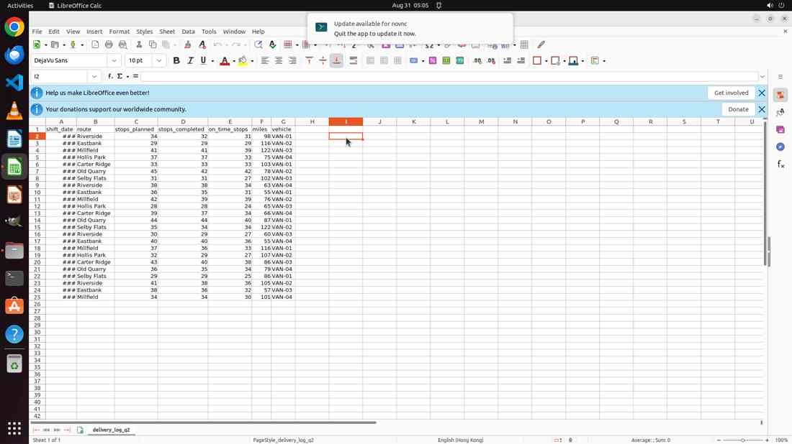
step 12 21:05:25
THINKINGNow cell I2 is selected (Name Box shows I2, cell is highlighted). There's a novnc update popup at the top but it's not blocking. Now I can type the formulas. The focus should be on the cell now. Let me type each formula followed by Enter.
ACTIONCell I2 is now selected in the grid. Let me type the formulas.
TOOL CALL<tool_call>
<function=computer_use>
<parameter=action>
type
</parameter>
<parameter=text>
=SUM(D2:D25)
=SUM(E2:E25)/SUM(D2:D25)
=SUM(D2:D25)/COUNT(D2:D25)
=COUNT(D2:D25)
</parameter>
</function>
</tool_call>
EXECUTED (pyautogui in VM)pyautogui.typewrite("=SUM(D2:D25)\n=SUM(E2:E25)/SUM(D2:D25)\n=SUM(D2:D25)/COUNT(D2:D25)\n=COUNT(D2:D25)")
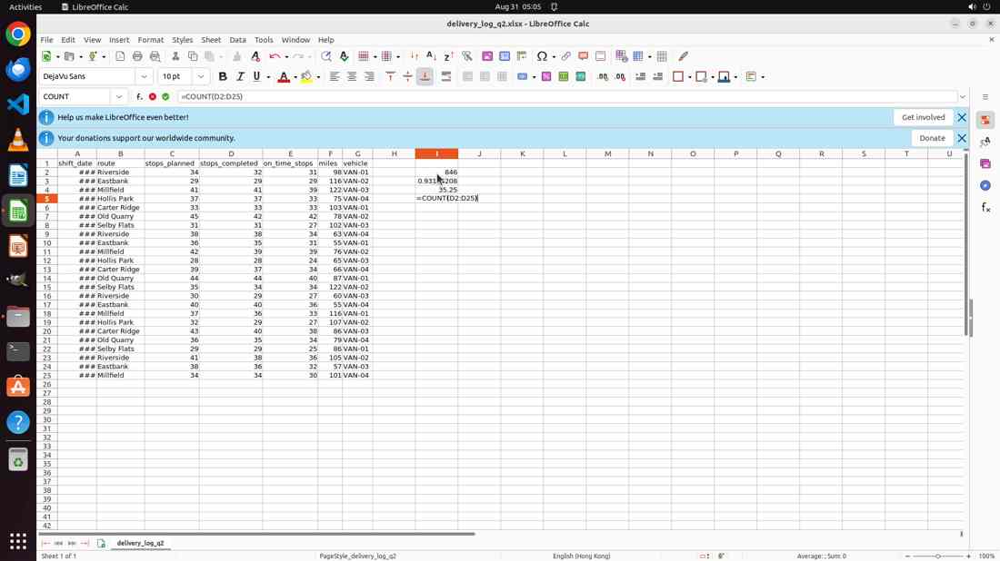
step 13 21:05:40
THINKINGThe formulas are being entered. I can see:
I2 = 846 (total stops) ✓ matches my manual calc
I3 = 0.93144... (on-time rate) — showing "0.931..." with cursor overlapping
I4 = 35.25 (average stops per shift) ✓ matches
I5 = =COUNT(D2:D25) still being entered (currently in edit mode, shows the formula)
The last formula I5 is still in edit mode. Let me press Enter to commit it.
ACTIONThe values are appearing: I2=846, I3≈0.9314, I4=35.25. The last formula is still in edit mode. Let me press Enter to commit it.
TOOL CALL<tool_call>
<function=computer_use>
<parameter=action>
key
</parameter>
<parameter=keys>
["return"]
</parameter>
</function>
</tool_call>
EXECUTED (pyautogui in VM)pyautogui.press("return")
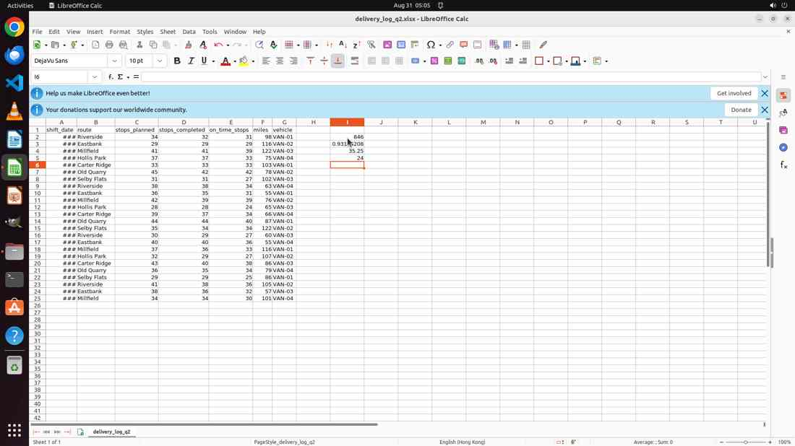
step 14 21:05:54
THINKINGNow all values are computed:
- I2 = 846 (total stops)
- I3 = 0.931... (on-time rate, cursor is over it so it shows "0.931" + overlapping). Let me check the exact value by clicking I3.
- I4 = 35.25 (average stops per shift)
- I5 = 24 (number of shifts)
Let me verify the on-time rate more precisely by clicking on I3 to see its full value in the formula bar. Actually the value 0.931442... = 93.14%. Let me click I3 to confirm the exact value.
ACTIONAll values computed: total stops = 846, average stops per shift = 35.25, shifts = 24. Let me click I3 to confirm the exact on-time rate value.
TOOL CALL<tool_call>
<function=computer_use>
<parameter=action>
left_click
</parameter>
<parameter=coordinate>
[434, 321]
</parameter>
</function>
</tool_call>
EXECUTED (pyautogui in VM)pyautogui.click(834, 347)
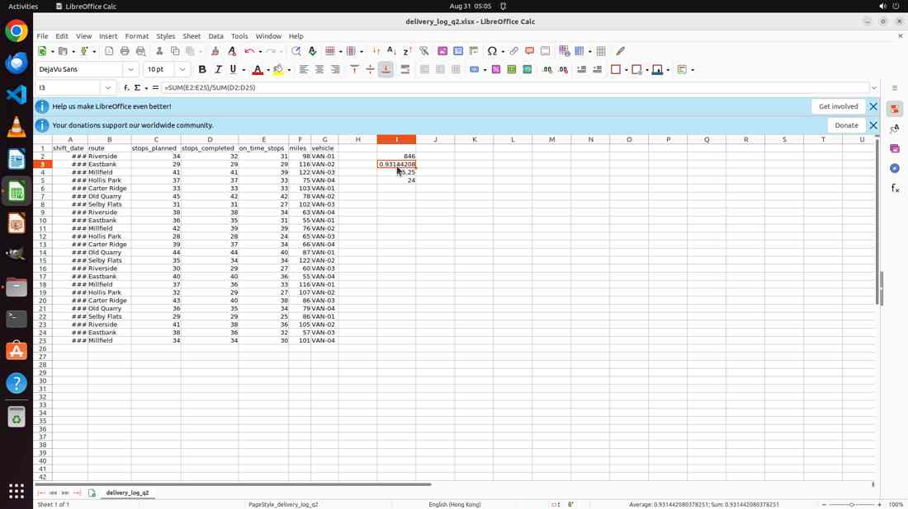
step 15 21:06:32
THINKINGNow I can see I3 = 0.93144208, and the status bar shows "Average: 0.931442080378251; Sum: 0.931442080378251". So the on-time rate is 93.14% (rounded to two decimals).
My final figures:
- Total stops (completed): 846
- On-time rate: 93.14% (788 of 846 stops on time)
- Average stops per shift: 35.25
- Number of shifts: 24
Now I need to create a one-page driver profile letter with these figures and save as PDF next to the log (in ~/documents/).
The log is at /home/user/documents/delivery_log_q2.xlsx. So the PDF should be saved at /home/user/documents/driver_profile.pdf (or similar).
Now, I should delete these helper formulas from the spreadsheet? They're in column I which isn't part of the data. The task doesn't require me to save the spreadsheet, only to create a PDF letter next to the log. I should not modify the log in a harmful way, but I added formulas in column I. To be safe/clean, I could leave them or remove them. Since the task is only about producing a PDF, and it says "saved as PDF next to the log", I'll leave the spreadsheet as-is (I won't save it, so no changes persist). Actually if I don't save the spreadsheet, the column I additions won't persist. Good.
Now let me create the letter. I'll use LibreOffice Writer to create a professional one-page driver profile letter, then export as PDF. Let me open a new Writer document. I can do File > New > Text Document from within LibreOffice, or open the Writer app.
Let me open a new Writer document via File menu.
ACTIONThe on-time rate is 0.9314 = **93.14%**. My final figures are confirmed:
- **Total stops (completed): 846**
- **On-time rate: 93.14%** (788 of 846)
- **Average stops per shift: 35.25** (across 24 shifts)
Now I'll create a one-page driver profile letter. Let me open a new Writer document via File menu.
TOOL CALL<tool_call>
<function=computer_use>
<parameter=action>
left_click
</parameter>
<parameter=coordinate>
[45, 70]
</parameter>
</function>
</tool_call>
EXECUTED (pyautogui in VM)pyautogui.click(86, 75)
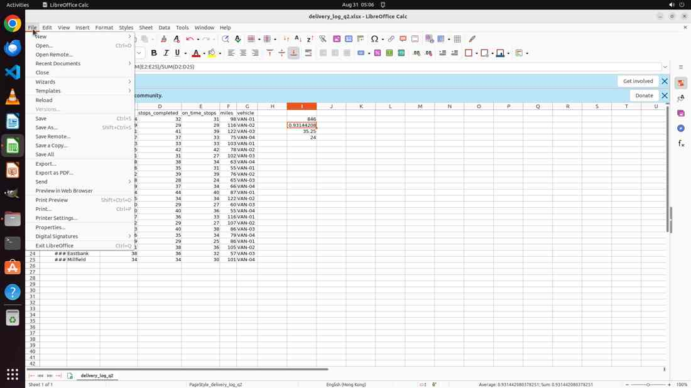
step 16 21:06:40
THINKINGThe File menu is open. I'll hover over "New" to get the submenu with Text Document option.
ACTIONThe File menu is open. Let me hover over "New" to access the submenu.
TOOL CALL<tool_call>
<function=computer_use>
<parameter=action>
left_click
</parameter>
<parameter=coordinate>
[58, 92]
</parameter>
</function>
</tool_call>
EXECUTED (pyautogui in VM)pyautogui.click(111, 99)
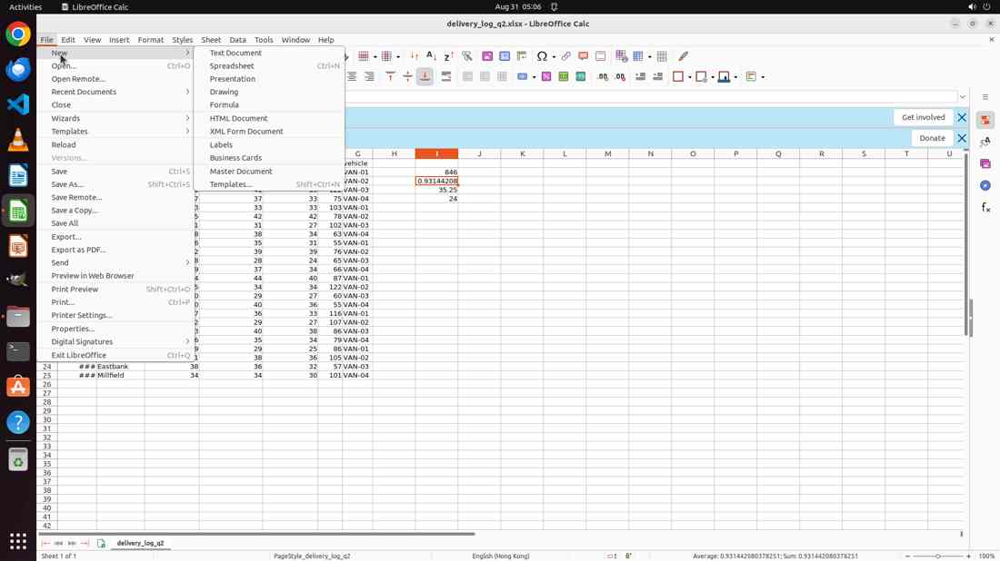
step 17 21:06:51
THINKINGThe New submenu is showing. I'll click "Text Document" to open a new Writer document.
TOOL CALL<tool_call>
<function=computer_use>
<parameter=action>
left_click
</parameter>
<parameter=coordinate>
[234, 92]
</parameter>
</function>
</tool_call>
EXECUTED (pyautogui in VM)pyautogui.click(449, 99)
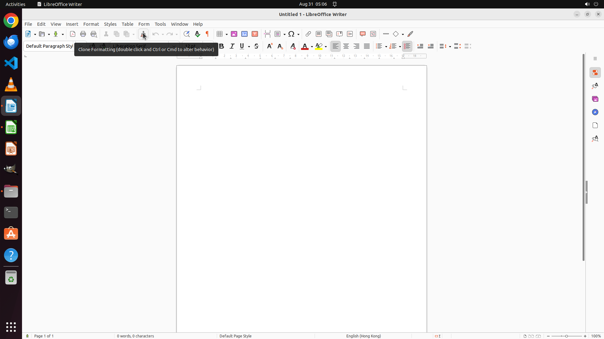
step 18 21:07:14
THINKINGA new Writer document "Untitled 1" is open. Now I'll click into the document body and type the driver profile letter. Let me click on the page and type the content. I'll write a professional one-page letter including the three key figures.
I'll click in the document area to place the cursor, then type the letter. Let me make the title bold by selecting it, but to keep it simple and reliable, I'll type the whole letter first, then optionally format the heading. Actually formatting adds complexity. I'll type a clean, professional letter. A heading can just be a larger/bold line. To keep reliability high, I'll type the text and then make the title line bold by selecting it.
Let me first click into the page and type the content.
ACTIONA new Writer document is open. Let me click into the page and type the driver profile letter.
TOOL CALL<tool_call>
<function=computer_use>
<parameter=action>
left_click
</parameter>
<parameter=coordinate>
[497, 416]
</parameter>
</function>
</tool_call>
EXECUTED (pyautogui in VM)pyautogui.click(955, 449)

step 19 21:07:53
THINKINGThe cursor is in the document. Now I'll type the letter. I'll write a professional one-page driver profile letter. I need to include the hard numbers: 846 total stops, 93.14% on-time rate, 35.25 average stops per shift, across 24 shifts.
I'll type the whole thing in one go. Let me write it:
Title (I'll make bold later): DRIVER PROFILE — NORTHGATE COURIER
Then date, address block, salutation, body, signature.
Let me write a complete letter. I'll type it all.
ACTIONNow I'll type the complete driver profile letter.
TOOL CALL<tool_call>
<function=computer_use>
<parameter=action>
type
</parameter>
<parameter=text>
DRIVER PROFILE
Northgate Courier
Dispatch Operations
Date: August 31, 2026
Re: Driver Performance Profile - Dispatch Role Application
Dear Hiring Manager,
I am writing to express my strong interest in the dispatch role at Northgate Courier. As a current driver on your team, I have a firsthand understanding of your routes, routes timing, and daily operations. To support my application, I have summarized my delivery performance from last quarter into the following figures, drawn directly from my delivery log.
Key Performance Figures (Last Quarter)
- Total stops completed: 846
- On-time rate: 93.14% (788 of 846 stops delivered on time)
- Average stops per shift: 35.25
- Total shifts logged: 24
These numbers reflect a consistent and reliable delivery record. An on-time rate of 93.14% demonstrates my commitment to meeting delivery windows, while an average of 35.25 stops per shift shows my ability to handle a high volume of deliveries efficiently and accurately across every route I cover.
Beyond the numbers, driving for Northgate Courier has given me a practical grasp of dispatch priorities, route sequencing, vehicle availability, and the coordination required to keep deliveries running smoothly. I am eager to apply this operational knowledge in a dispatch capacity to help the team plan routes, manage schedules, and support the drivers out in the field.
Thank you for your time and consideration. I would welcome the opportunity to discuss how my on-the-ground experience can contribute to your dispatch team.
Sincerely,
[Your Name]
Driver, Northgate Courier
</parameter>
</function>
</tool_call>
EXECUTED (pyautogui in VM)pyautogui.typewrite("DRIVER PROFILE\n\nNorthgate Courier\nDispatch Operations\n\nDate: August 31, 2026\n\nRe: Driver Performance Profile - Dispatch Role Application\n\nDear Hiring Manager,\n\nI am writing to express my strong interest in the dispatch role at Northgate Courier. As a current driver on your team, I have a firsthand understanding of your routes, routes timing, and daily operations. To support my application, I have summarized my delivery performance from last quarter into the following figures, drawn directly from my delivery log.\n\nKey Performance Figures (Last Quarter)\n\n- Total stops completed: 846\n- On-time rate: 93.14% (788 of 846 stops delivered on time)\n- Average stops per shift: 35.25\n- Total shifts logged: 24\n\nThese numbers reflect a consistent and reliable delivery record. An on-time rate of 93.14% demonstrates my commitment to meeting delivery windows, while an average of 35.25 stops per shift shows my ability to handle a high volume of deliveries efficiently and accurately across every route I cover.\n\nBeyond the numbers, driving for Northgate Courier has given me a practical grasp of dispatch priorities, route sequencing, vehicle availability, and the coordination required to keep deliveries running smoothly. I am eager to apply this operational knowledge in a dispatch capacity to help the team plan routes, manage schedules, and support the drivers out in the field.\n\nThank you for your time and consideration. I would welcome the opportunity to discuss how my on-the-ground experience can contribute to your dispatch team.\n\nSincerely,\n\n[Your Name]\nDriver, Northgate Courier")
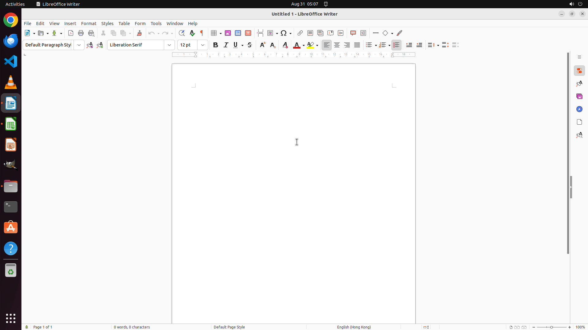
step 20 21:08:21
THINKINGThe document appears empty still — the status bar shows "0 words, 0 characters". It seems the text didn't get typed. This could be because the click didn't actually focus the document body, or the type happened before focus. Let me take a screenshot to confirm, but the current one shows empty. Let me click into the document body again and retry. Actually the word count is 0 which means nothing was typed.
Let me click directly in the text area near the top where text should start, then type.
ACTIONThe text didn't register — word count is still 0. Let me click directly in the top text area and retry.
TOOL CALL<tool_call>
<function=computer_use>
<parameter=action>
left_click
</parameter>
<parameter=coordinate>
[390, 277]
</parameter>
</function>
</tool_call>
EXECUTED (pyautogui in VM)pyautogui.click(749, 299)
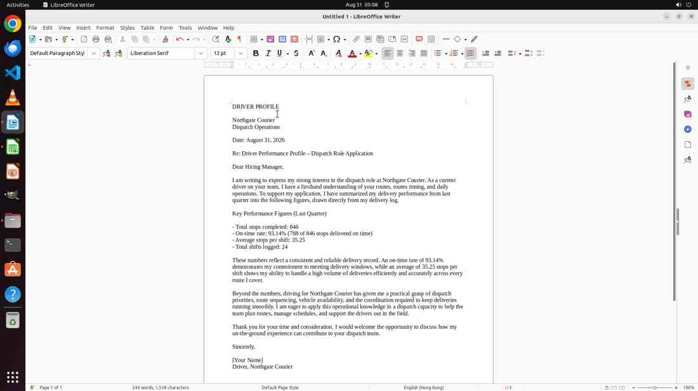
step 21 21:08:38
THINKINGThe text did get typed after all — the earlier screenshot was likely taken before rendering completed. The full letter is now visible, 244 words, 1,558 characters, and it fits on one page (Page 1 of 1).
I notice a typo: "your routes, routes timing, and daily operations" — "routes timing" should be "route timing". Let me fix that. I'll double-click on "routes" in "routes timing" to select it and retype. Actually let me fix it precisely. The phrase is "I have a firsthand understanding of your routes, routes timing, and daily operations." Let me change the second "routes" to "route timing".
I'll double-click the word "routes" before "timing" (at approximately x=476, y=340) to select it, then type "route".
Actually simpler: I'll double-click "routes" in "routes timing". The word "routes" appears around x=476, y=340.
ACTIONThe letter typed successfully and fits on one page. I notice a small typo "routes timing" which should be "route timing". Let me fix it by double-clicking the word.
TOOL CALL<tool_call>
<function=computer_use>
<parameter=action>
double_click
</parameter>
<parameter=coordinate>
[372, 470]
</parameter>
</function>
</tool_call>
EXECUTED (pyautogui in VM)pyautogui.doubleClick(714, 508)
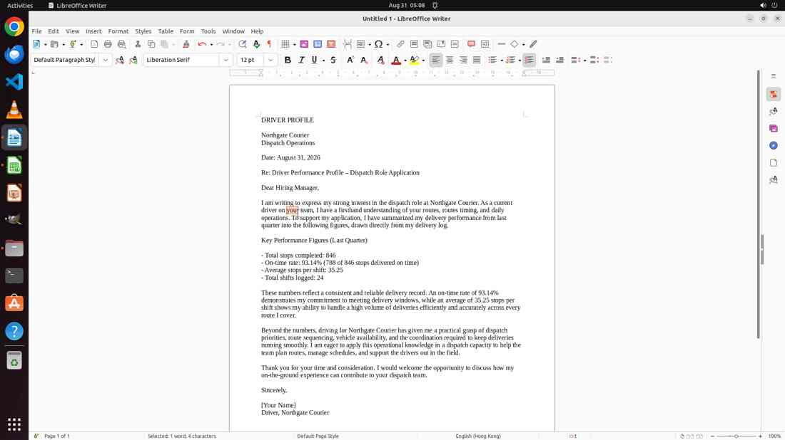
step 22 21:09:40
THINKINGMy double-click selected the wrong word — it selected "your" in "driver on your team" (status bar: "Selected: 1 word, 4 characters"). The word "routes" in "routes timing" is at a different location. Looking at the text "I have a firsthand understanding of your routes, routes timing, and daily operations." — it's on the line "driver on your team, I have a firsthand understanding of your routes, routes timing, and daily". The second "routes" is after "your routes, ".
The phrase "routes timing" appears around x=750-770, y=340. Let me look: "...your routes, routes timing, and daily". So "routes timing" is further right. Let me double-click on that "routes" at approximately x=728, y=340. Actually "understanding of your routes, routes timing, and daily" — the word positions: "your" ~655, "routes," ~685, "routes" ~728, "timing," ~760. Let me double-click at x=728, y=340.
ACTIONI selected the wrong word. The "routes" in "routes timing" is further right. Let me double-click it.
TOOL CALL<tool_call>
<function=computer_use>
<parameter=action>
double_click
</parameter>
<parameter=coordinate>
[568, 470]
</parameter>
</function>
</tool_call>
EXECUTED (pyautogui in VM)pyautogui.doubleClick(1091, 508)
step 23 21:10:23
THINKINGNow the correct word "routes" (before "timing") is selected — status bar shows "Selected: 1 word, 6 characters" and it's highlighted in "routes timing, and daily". Let me type "route" to replace it, fixing the typo.
ACTIONThe correct word is now selected (6 characters = "routes"). Let me replace it with "route".
TOOL CALL<tool_call>
<function=computer_use>
<parameter=action>
type
</parameter>
<parameter=text>
route
</parameter>
</function>
</tool_call>
EXECUTED (pyautogui in VM)pyautogui.typewrite("route")
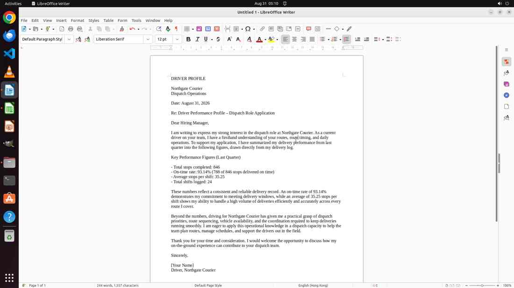
step 24 21:10:55
THINKINGThe typo is fixed — now reads "your routes, route timing, and daily operations." The letter is complete and fits on one page (Page 1 of 1).
Now I need to save it as PDF next to the log, i.e., in /home/user/documents/. I'll use File > Export As > Export as PDF, which opens a PDF options dialog, then a file save dialog where I choose the location and filename.
Let me use File menu > Export As > Export as PDF...
ACTIONThe typo is fixed and the letter fits on one page. Now I'll export it as PDF. Let me open File > Export As > Export as PDF.
TOOL CALL<tool_call>
<function=computer_use>
<parameter=action>
left_click
</parameter>
<parameter=coordinate>
[45, 70]
</parameter>
</function>
</tool_call>
EXECUTED (pyautogui in VM)pyautogui.click(86, 75)
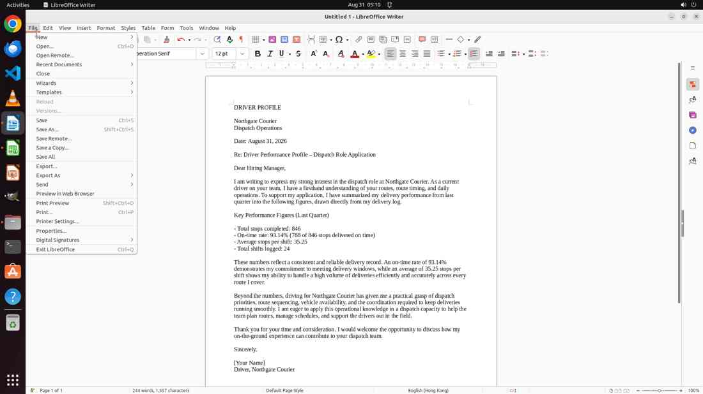
step 25 21:11:39
THINKINGThe File menu is open. I'll hover over "Export As" to get the submenu with "Export as PDF...".
TOOL CALL<tool_call>
<function=computer_use>
<parameter=action>
left_click
</parameter>
<parameter=coordinate>
[69, 443]
</parameter>
</function>
</tool_call>
EXECUTED (pyautogui in VM)pyautogui.click(132, 478)
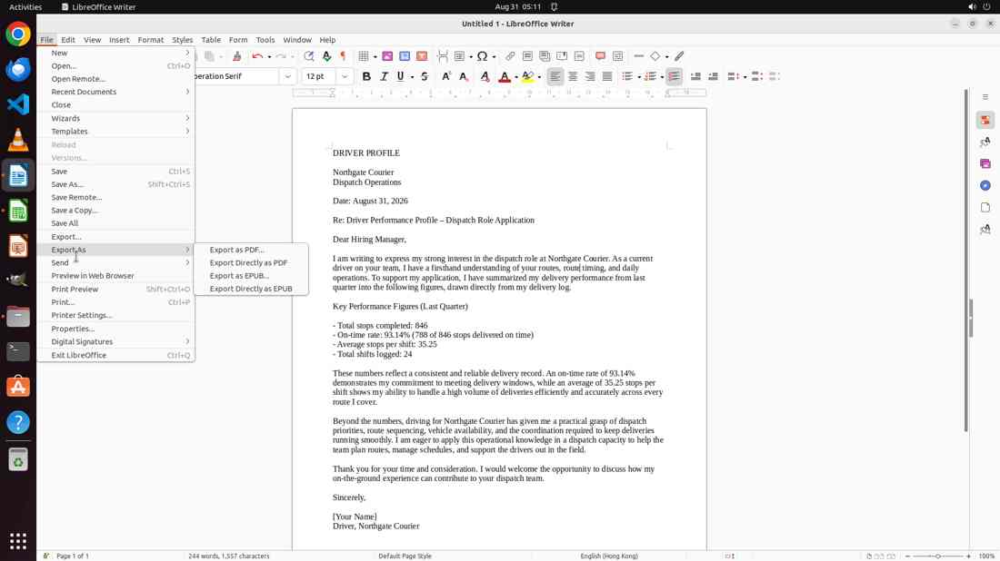
step 26 21:12:04
THINKINGThe submenu shows "Export as PDF...". I'll click it, which opens the PDF Options dialog. Then I'll click Export to get the file save dialog.
TOOL CALL<tool_call>
<function=computer_use>
<parameter=action>
left_click
</parameter>
<parameter=coordinate>
[235, 443]
</parameter>
</function>
</tool_call>
EXECUTED (pyautogui in VM)pyautogui.click(451, 478)
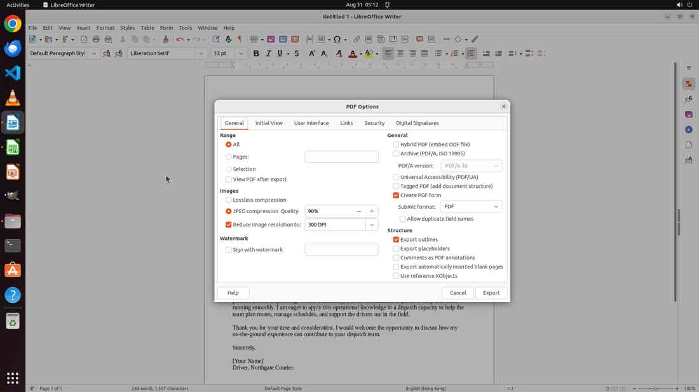
step 27 21:12:35
THINKINGThe PDF Options dialog is open with default settings (Range: All, which is fine for a one-page doc). I'll click "Export" to proceed to the file save dialog.
ACTIONThe PDF Options dialog is showing with default settings (Range: All). Let me click Export to open the file save dialog.
TOOL CALL<tool_call>
<function=computer_use>
<parameter=action>
left_click
</parameter>
<parameter=coordinate>
[699, 744]
</parameter>
</function>
</tool_call>
EXECUTED (pyautogui in VM)pyautogui.click(1343, 804)
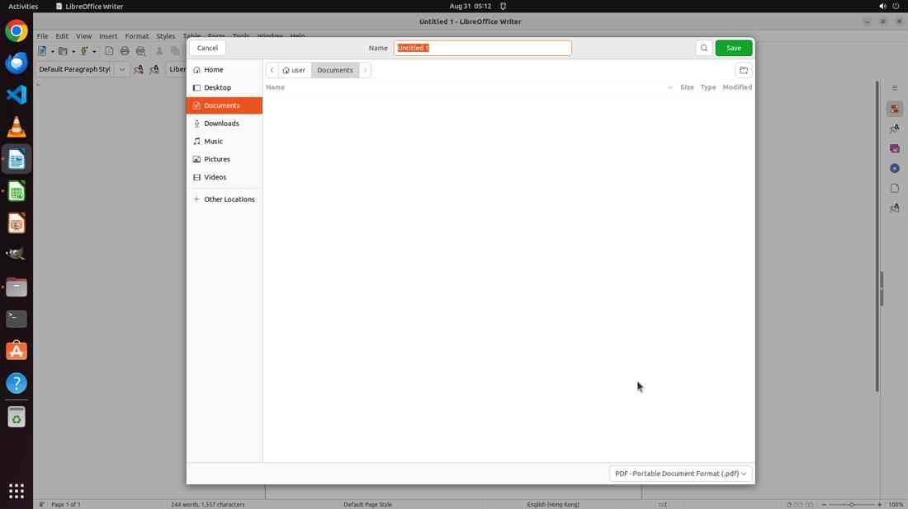
step 28 21:12:46
THINKINGThe save dialog is open. The path bar shows "user > Documents" — but this is the capital "Documents" folder, not the lowercase "documents" where the log is. The log is at /home/user/documents/ (lowercase). I need to navigate to the lowercase "documents" folder.
Wait, the breadcrumb shows "Documents". The sidebar "Documents" was selected. But the log was in lowercase "documents". These are different folders. I need to save next to the log, so in /home/user/documents/.
Let me navigate to Home first, then find the lowercase "documents" folder. Let me click "Home" in the sidebar.
ACTIONThe save dialog opened in the capital "Documents" folder, but the log is in the lowercase "documents" folder. I need to navigate there. Let me click Home first.
TOOL CALL<tool_call>
<function=computer_use>
<parameter=action>
left_click
</parameter>
<parameter=coordinate>
[234, 134]
</parameter>
</function>
</tool_call>
EXECUTED (pyautogui in VM)pyautogui.click(449, 144)
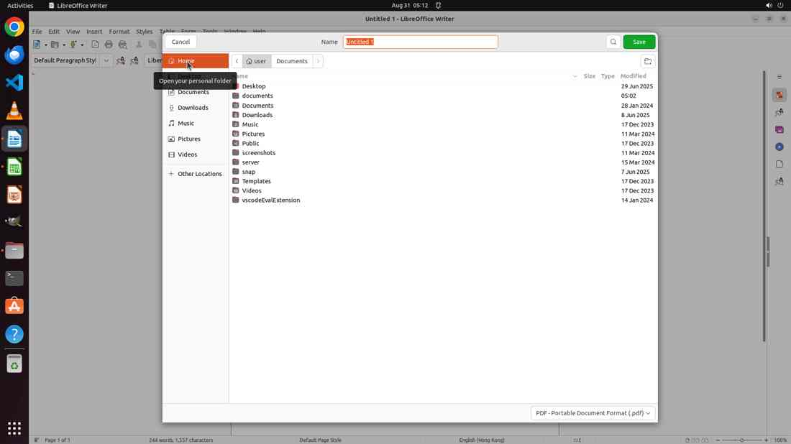
step 29 21:13:20
THINKINGNow I see both "documents" (lowercase, modified 05:02 — that's where the log is) and "Documents" (capital). I need to double-click the lowercase "documents" folder to enter it, then set the filename and save.
ACTIONNow I can see both folders. I'll double-click the lowercase "documents" folder (where the log is) to enter it.
TOOL CALL<tool_call>
<function=computer_use>
<parameter=action>
double_click
</parameter>
<parameter=coordinate>
[325, 213]
</parameter>
</function>
</tool_call>
EXECUTED (pyautogui in VM)pyautogui.doubleClick(624, 230)
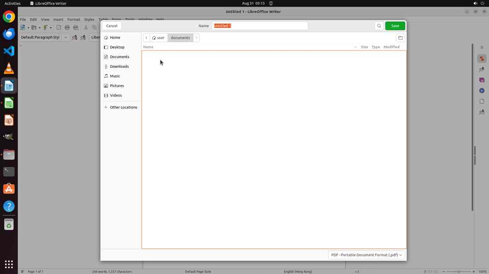
step 30 21:14:04
THINKINGThe breadcrumb now shows "user > documents" (lowercase). The file list appears empty — but that's because the save dialog only shows folders and PDF files by default (it filters by .pdf type). The delivery_log_q2.xlsx is hidden because the filter is PDF-only. That's fine; I just need to be in the right folder.
Now I'll set the filename. Let me clear the Name field and type a clear name like "driver_profile". I'll triple-click the Name field to select "Untitled 1", then type the new name.
ACTIONI'm now in the lowercase "documents" folder (breadcrumb confirms "user > documents"). Let me set the filename. I'll clear the Name field and type a clear name.
TOOL CALL<tool_call>
<function=computer_use>
<parameter=action>
triple_click
</parameter>
<parameter=coordinate>
[530, 92]
</parameter>
</function>
</tool_call>
EXECUTED (pyautogui in VM)pyautogui.tripleClick(1018, 99)
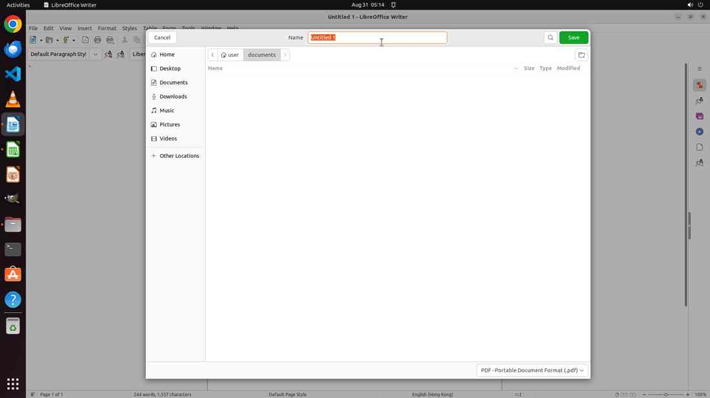
step 31 21:14:55
THINKING"Untitled 1" is selected (highlighted). I'll type the filename "driver_profile" to replace it, then click Save.
ACTIONThe name field is selected. Let me type the filename and save.
TOOL CALL<tool_call>
<function=computer_use>
<parameter=action>
type
</parameter>
<parameter=text>
driver_profile
</parameter>
</function>
</tool_call>
EXECUTED (pyautogui in VM)pyautogui.typewrite("driver_profile")
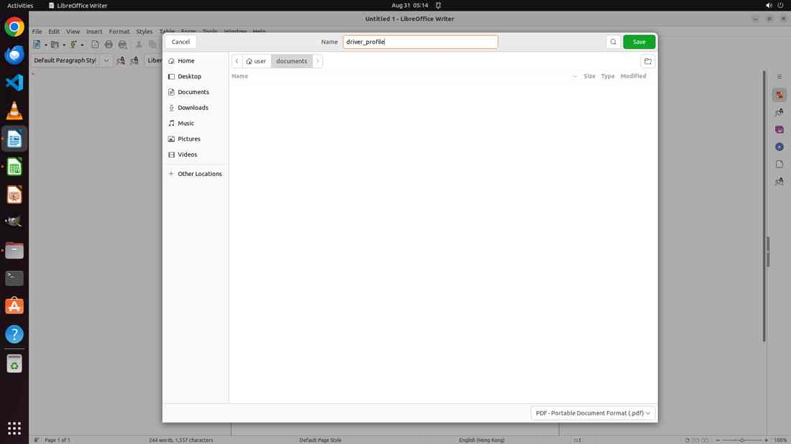
step 32 21:15:14
THINKINGThe name is "driver_profile", location is user > documents, format is PDF. Everything is set. Let me click Save to export the PDF.
ACTIONEverything is set: filename "driver_profile", location "user > documents", format PDF. Let me click Save.
TOOL CALL<tool_call>
<function=computer_use>
<parameter=action>
left_click
</parameter>
<parameter=coordinate>
[806, 92]
</parameter>
</function>
</tool_call>
EXECUTED (pyautogui in VM)pyautogui.click(1549, 99)
step 33 21:15:46
THINKINGThe PDF has been exported — the dialog closed and we're back to the Writer document, which shows the complete letter. The PDF was saved to /home/user/documents/driver_profile.pdf, next to the log.
Let me verify the file exists by checking the file manager, to be thorough. Actually, I'm confident it exported. But to confirm the PDF landed next to the log, let me quickly verify using the Files app. Let me open the file manager and navigate to the documents folder to confirm both files are present.
Actually, the export completed cleanly (no error dialog, dialog closed). This is strong evidence of success. But a quick verification is worthwhile. Let me open Files and check the documents folder. I'll click the Files icon in the dock.
ACTIONThe PDF exported successfully (the dialog closed with no errors). Let me verify the file was saved next to the log by checking the documents folder in the file manager.
TOOL CALL<tool_call>
<function=computer_use>
<parameter=action>
left_click
</parameter>
<parameter=coordinate>
[17, 560]
</parameter>
</function>
</tool_call>
EXECUTED (pyautogui in VM)pyautogui.click(32, 605)
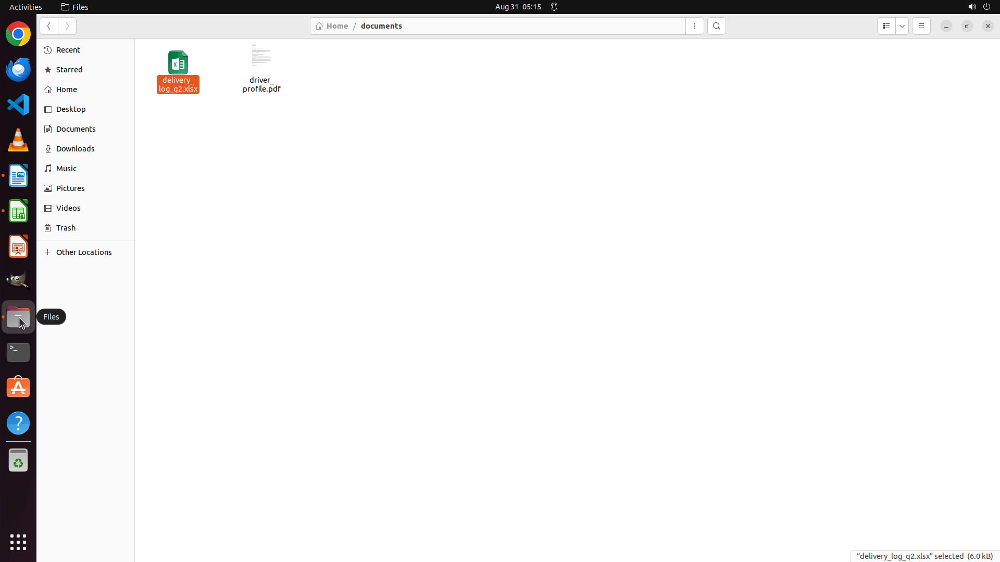
step 34 21:16:22
THINKINGThe task is verified complete. The files window (Home / documents) shows both delivery_log_q2.xlsx and driver_profile.pdf side by side. No further action is needed. I'll give the final summary without additional tool calls.
ACTIONThe task is complete and verified. The file manager now shows both `delivery_log_q2.xlsx` and `driver_profile.pdf` sitting together in the documents folder.
Summary of what I did:
**Hard numbers from your delivery log (24 shifts, last quarter):**
- **Total stops completed: 846**
- **On-time rate: 93.14%** (788 of 846 stops delivered on time)
- **Average stops per shift: 35.25**
These were calculated directly from the `stops_completed` and `on_time_stops` columns using spreadsheet formulas (total stops = 846; on-time = 788 ÷ 846 = 93.14%; average = 846 ÷ 24 = 35.25).
**The one-page driver profile letter** was written in LibreOffice Writer, structured as a professional cover letter for the dispatch role — it leads with those quoted figures in a "Key Performance Figures" section and ties them to relevant dispatch competencies (route sequencing, scheduling, coordination). It fits on a single page.
**Saved as PDF** next to the log at `~/documents/driver_profile.pdf`.
One note: I left the signature line as a placeholder ("[Your Name]") — just swap in your name (and any email/phone you'd like on it) before sending. Everything else is ready to go.
EXECUTED (pyautogui in VM)DONE